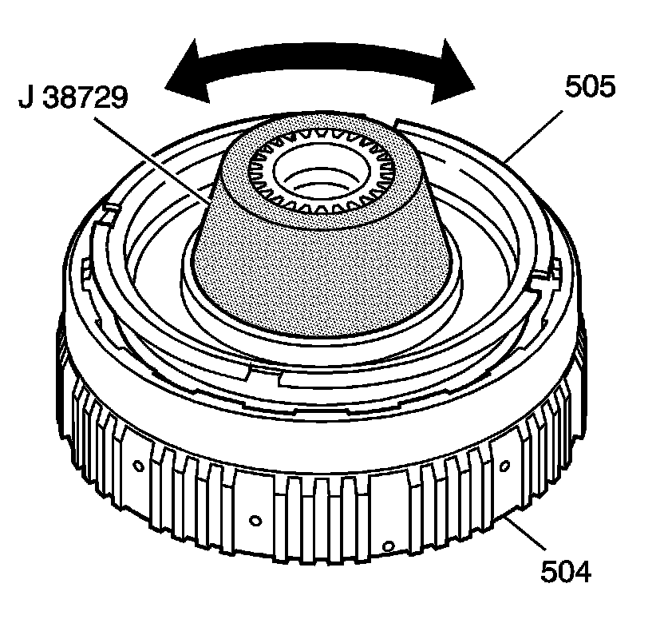
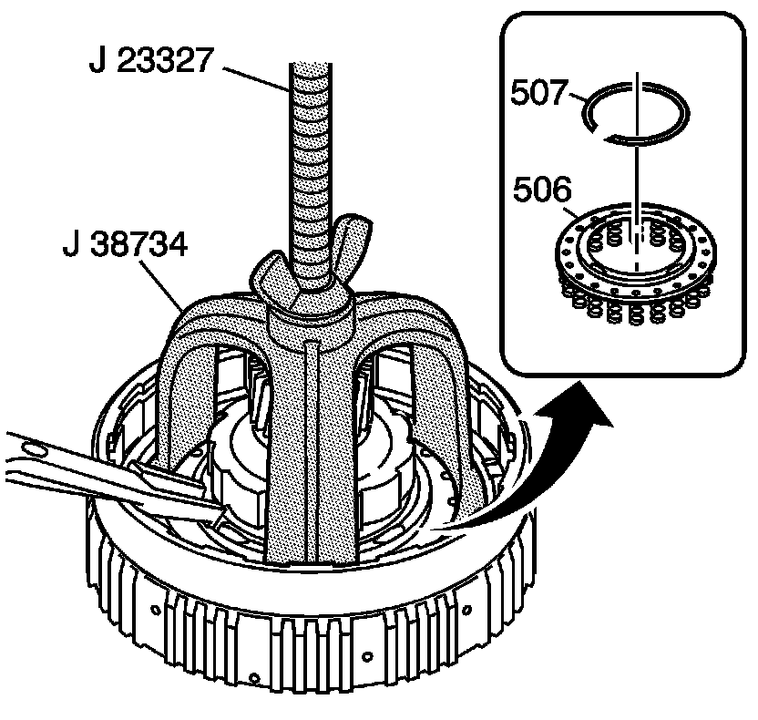
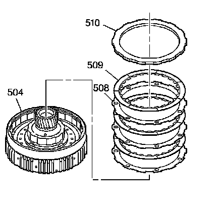
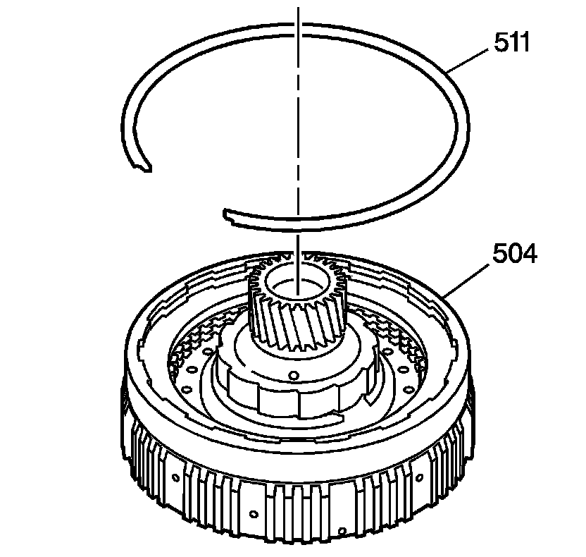

Overrun Clutch Assembly Assemble
Overrun Clutch Assembly Assemble
Tools Required
^ J 23327 Clutch Spring Compressor
^ J 38729 Overrun Clutch Piston Seal Protector
^ J 38734 Intermediate Spring Compressor Adapter

1. Install the J 38729 onto the overrun clutch housing assembly (504).
2. Lubricate the seal on the overrun clutch piston assembly (505) with DEXRON(R)VI transmission fluid.
3. Assemble the overrun clutch piston assembly (505) into the overrun clutch housing assembly (504).
Notice: Keep the overrun clutch piston assembly level and rotate the piston in order to avoid damaging the seal.
4. Rotate the overrun clutch piston (505) in order to aid in assembly.

5. Install the overrun clutch spring assembly (506) onto the overrun clutch piston assembly (505).
6. Using the J 23327 and the J 38734, compress the overrun clutch spring assembly (506).
7. Install the overrun clutch spring retainer ring (507).

Important: Alternate the clutch plates, starting with the steel clutch plate (508) (3 steel, 3 composite).
8. Install the overrun clutch plates (508, 509).
9. Install the overrun clutch backing plate (510).

10. Install the overrun clutch backing plate retainer ring (511) on the overrun clutch housing assembly (504).